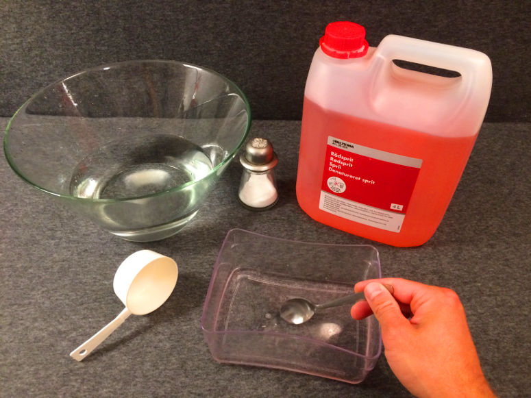
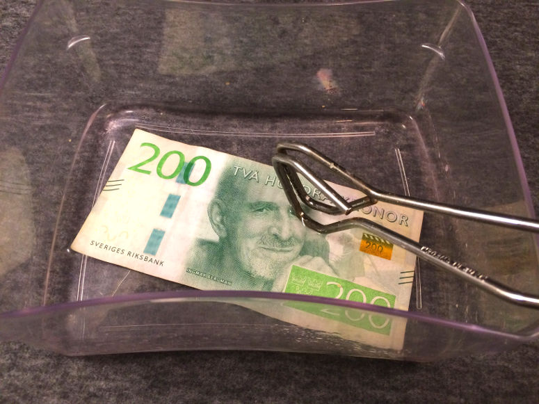
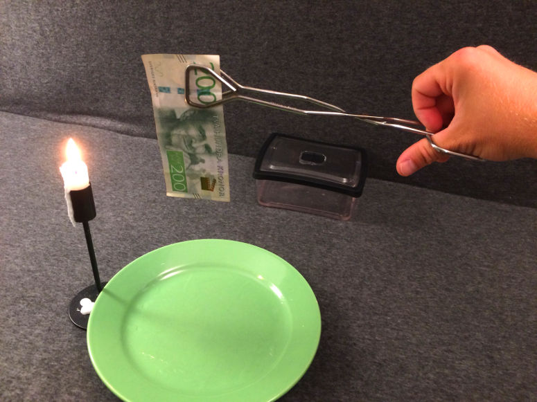
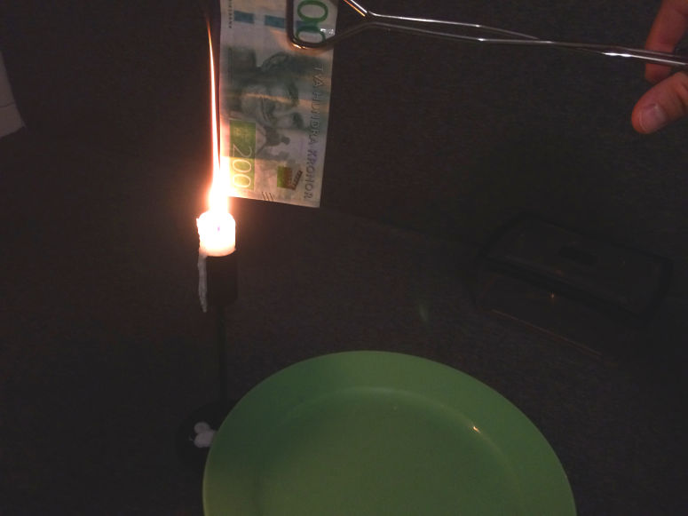
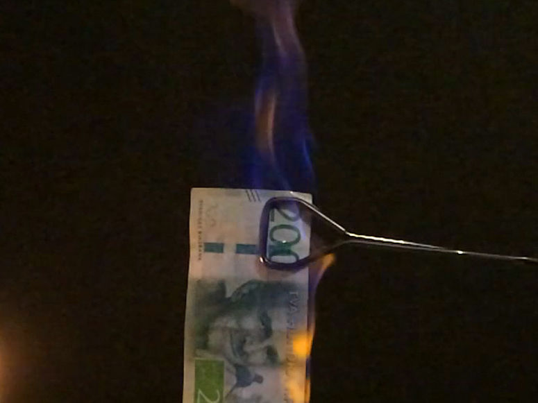

Fun and easy science experiments for kids and adults.
Special:
Burning money

Physics
Set fire to a bill! This is an experiment about energy, heat, chemical reactions and water.
| Gilla: | Dela: | |
Video

Materials
- Ethanol
- 1 bill (banknote)
- 1 pair of grill tongs
- A 1 dl measuring cup (or a 1 cup measuring cup)
- 1 bowl
- 1 spoon
- 1 fire proof plate
- 1 lighter or burning candle (to ignite the bill)
- Salt
- Water
- Safety equipment: 1 fire extinguisher, 1 bucket of water, 1 pair of safety goggles
Warning!
These risks exist:- Something may catch fire.
- Someone may burn themselves.
- Inhalation, skin contact, eye contact or ingestion of ethanol.
- Do the demonstration in the company of an adult with experience of fire.
- Wear safety goggles.
- Have a fire extinguisher ready.
- Have a bucket of water ready.
- Never hold a burning bill with your hand - use grill tongs.
- When lighting the bill: Be sure that you do not have any ethanol on you, keep the bill far away from the body and the bowl of ethanol, and hold the bill above the plate.
- Be aware that burning drops can fall from the burning bill. They may burn on the plate. Just let them burn out.
- Do not do the demonstration outdoors, as the slightest wind can cause the flame to reach your face.
- Practice extuingishing the bill by shaking it or putting it in the water bucket.
- Practice what to do if something catches fire or if someone burn themselves.
- Practice what to do if someone is injured by ethanol:
- Inhalation: Rest. Move to fresh air. Get medical attention if necessary.
- Skin contact: Take off contaminated clothes and shoes. Wash off skin with plenty of water and soap. Get medical attention if necessary.
- Eye contact: Rinse immediately with plenty of water, also under the eyelids, for at least 15 minutes. Get medical attention if necessary.
- Ingestion: Rinse mouth. Drink plenty of water. Get medical attention.
Step 1


Step 2

Step 3

Step 4

Step 5

Short explanation
Most of the heat released when the ethanol burns is absorbed by the water. This prevents the bill from igniting.Long explanation
When you hold a flame close to liquid ethanol, the liquid heats up so much that it first evaporates and then starts to burn. What happens then is that the ethanol react rapidly with oxygen and form water and carbon dioxide (and small amounts of other by-products). This chemical reaction is exothermic, which means that energy is released. In this specific chemical reaction, energy is released in the form of radiant energy (including light) and thermal energy (heat).The chemical equation of when ethanol burns is as follows:
C2H5OH + 4 O2 → 2 CO2 + 3 H2O + energy
Since energy can neither be created nor destroyed, only transformed, one may ask where this energy came from. Well, when the ethanol and oxygen molecules were formed (whenever that was), energy was required to move the electrons in these molecules so that the constituent atoms would sit together. This energy was then stored as potential energy in these molecules, which is called chemical energy. That is, until now, when the electrons in this chemical reaction were moved to less energy-demanding positions in newly formed molecules.
The flame in this demonstration consists of ethanol and oxygen that are being converted to water and carbon dioxide, as well as the radiant energy (light) and thermal energy (heat) that is formed as a by-product in that process. It's possible that part of the flame contains ethanol and/or oxygen that has become so hot that it has been ionized. This means that some of the electrons of these molecules are completely detached. This state is called plasma and is the state of matter that the chemical substances in the Sun have. But it's unclear whether the chemical reaction in this demonstration really releases so much heat that ionization occurs - and to our eyes, burning plasma and burning gas look pretty much the same.
The big question, though, is: why doesn't the bill burn up in this demonstration? The answer is water. The water in which the bill is also soaked absorbs most of the energy released in the exothermic chemical reaction.
Temperature is a measure of how much the particles in a substance move. In cold water the water molecules move a little and in hot water they move a lot. But it takes a lot of energy to heat water and get the molecules moving. This is because much of the energy added to water is used to bend and break the hydrogen bonds that hold the individual water molecules together. A lot of energy is absorbed by this process, instead of causing the water molecules to start moving. So water can be heated and heated, but still remain quite cool. Another way to put it is that water has a high heat capacity. However, when enough energy has been added to water, the bonds between the water molecules break completely. The water molecules are "dispersed by the wind" - which means that the water changes from a liquid state to gaseous state (water vapor).
Why add the salt? Well, this is to see the fire better. Ethanol burns with a rather invisible flame, while salt burns with a distinct yellow flame.
Experiment
You can turn this demonstration into an experiment. This will make it a better science project. To do that, try answering one of the following questions. The answer to the question will be your hypothesis. Then test the hypothesis by doing the experiment.- What happens if you only soak one half of the bill in the mixture?
- What happens if you halve the amount of ethanol?
- What happens if you halve the amount of water?
- What happens if you only use ethanol?
- What happens if you only use water?
- What happens if you dip one half of the bill in ethanol and the other half in water?
- What happens if you don't add the salt?
- What happens if you replace the salt with sugar?
Variation
Instead of a banknote, you can use plain paper or a piece of cloth.A spectacular version of this demonstration is to use a towel instead of a bill. You can find this experiment here: Burning towel.
| Gilla: | Dela: | |
Similar


Latest


Content of website
© The Experiment Archive. Fun and easy science experiments for kids and adults. In biology, chemistry, physics, earth science, astronomy, technology, fire, air and water. To do in preschool, school, after school and at home. Also science fair projects and a teacher's guide.
To the top
© The Experiment Archive. Fun and easy science experiments for kids and adults. In biology, chemistry, physics, earth science, astronomy, technology, fire, air and water. To do in preschool, school, after school and at home. Also science fair projects and a teacher's guide.
To the top